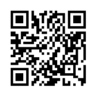

anonymous, transparent, and cheat-proof with a 99% payout!
Valid Addresses for BitLotto:
This page lists all the official addresses used by BitLotto and it's affiliates. Note that all the addresses listed here are under the control of BitLotto. No affiliate can spend the BTC sent in to these addresses.
Addresses used by BitLotto will be PGP signed using BitLotto's private key and can be verified with BitLotto's
public key. (Also here)
If BitLotto.com is shut down or not working, the lottery can still continue. All that needs to be distributed is
the address for depositing entries. If BitLotto is forced to distribute the addresses outside of BitLotto.com,
the public key can be used to verify the authenticity of the addresses. BitLotto will continue operating even
without a working website. As long as the Bitcoin network is working, BitLotto can operate.
The public key will NEVER change, unless there is PGP signed statement using the older key, stating a change.
By using a PGP signed address, all players can be CERTAIN the operator of the
lottery is BitLotto and not someone else. Always see here for the complete guide on playing.
May 2 Deadline
1Cbz6PF7ks85M4zmeWzotX12WUE14JZ29

-----BEGIN PGP SIGNED MESSAGE----- Hash: SHA256 May 2 2012 1Cbz6PF7ks85M4zmeWzotX12WUE14JZ29 Affiliates: 16F2N1GuQ9FhDo5b9eCxhyf9hbizQo6VXQ DailyAnarchist -----BEGIN PGP SIGNATURE----- Version: GnuPG v1.4.11 (GNU/Linux) iQIcBAEBCAAGBQJPf6QNAAoJEH803idEhMO8bvEP/i7bvVJE/OVhEksM03J6/3ev U/tfVXqltBkWNEz9g7jCmXBi5WJ4o+QX4wMSXcvfg9Fgs/G/lXjezzG44AzxvIfS fCzZAk6e3RLhr+BPTUQsiHVdHRIwKpTwCrqa9uA4PKN80AqcdaFZEFNY3BKEqLud 4uU3TkNxLqcpy7F/cosZ3+puae2R46HyCWXIKYivngv2BsHGIS6qmSNksEFidj8E jbrN8C+LlLVrv02/TlbGHGrKqEwspVyKFpbyrYM/yJxrt4Xcu0zrS7F6GKVNj0LT 48H6Y5yHktkGH+tO4A08ixEGIJgS8DpClTDnN56wlfj20J6QI58hVsVAby64dSe3 rcTi43LDb6V29Z+EQsKwBcNnsDxnJUDQGlaRqzjuKPLKv9G7qjG74CPqb1alR2rO GXA1hL/A3FDpaq1lIU7aZzMkaVfJ8xgAlktXcrcompHGFbsBDkQJrpq3bxvrBf84 us3ixnNz+aEY/WWVUPvO9S6omhhTnxxv50mRsxk5NeYnIDOP6MSf+IiSGm4QGO6k LIcZZuxdMDV41eZofpylMNPT2O36W1l9T4Wy0WL2x+vD1OYx8CiMzRPss49hAMyo C5B+vklG2gPxw0lKWk35KZeEZZDZGux/XzuB8SFlGpm0e6vWAlzhcARSJpZfFZmA X4rThUl/D8iABdLQzc7h =BpNq -----END PGP SIGNATURE-----
Go to BitLotto.com for more details.
Copyright 2011 BitLotto
BitLotto is for entertainment purposes only. You must be 18 or older (or of legal majority in your country of citizenship) to play BitLotto. By playing BitLotto, you agree to these terms. This website is for informational purposes only. All financial transactions are to occur globally on the Bitcoin P2P network, not on this website. Know your limits. Play within them.